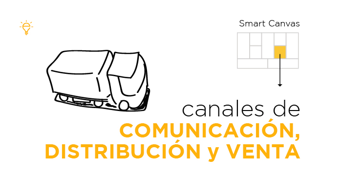

Canales de distribución y comunicaciones

Campañas de marketing en línea
Publicidad en redes sociales
Utilizar anuncios en plataformas como Facebook, Instagram y LinkedIn para destacar las características únicas de nuestro software de preventa y llegar a vendedores potenciales en áreas urbanas y rurales.
Marketing de contenidos
Crear contenido útil y relevante relacionado con los desafíos de la preventa en distribuidoras y cómo nuestro software puede resolverlos.
SEO
Optimizar nuestro sitio web y contenido para que aparezca en los resultados de búsqueda cuando los vendedores busquen soluciones de preventa.
Email marketing
Envíar correos electrónicos a distribuidores y vendedores potenciales para informarles sobre nuestro software de preventa, sus beneficios y cómo pueden solicitar una demostración o suscribirse.
Demostraciones de productos
Organizar sesiones de demostración en línea para mostrar cómo nuestro software de preventa puede simplificar el proceso de pedidos, mejorar la gestión de inventario y aumentar la eficiencia de los vendedores. Organizar eventos presenciales en áreas urbanas y rurales donde podamos presentar el software a distribuidores y vendedores locales, proporcionando demostraciones en vivo y ofreciendo incentivos especiales para aquellos que se registren durante el evento.
Programas de referidos y recompensas
Implementar un programa de referidos donde los usuarios actuales de nuestro software puedan recomendarlo a otros distribuidores y vendedores. Ofrecer incentivos, como descuentos en suscripciones o créditos, por cada referencia exitosa que resulte en una venta.
Colaboraciones y alianzas estratégicas
Buscá oportunidades para colaborar con otras empresas en el sector de distribución, como fabricantes de productos o proveedores de servicios complementarios. Juntos, se puede promover mutuamente sus soluciones a sus respectivas audiencias y generar más interés en su software de preventa.
Al implementar estas estrategias de marketing y promoción específicamente adaptadas a nuestro software de preventa para distribuidoras, podremos aumentar la conciencia de nuestra marca, atraer a nuevos usuarios y convertirlos en clientes satisfechos.